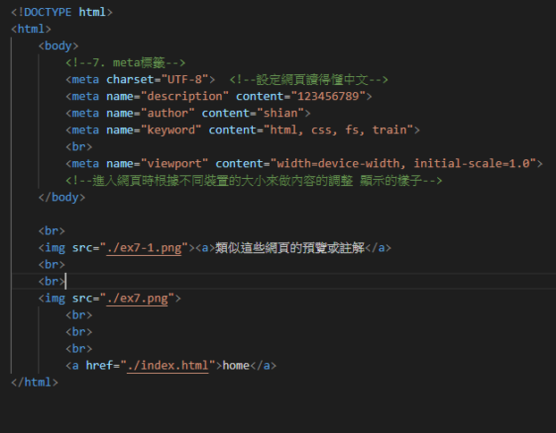

<!DOCTYPE html>    
<html>
    <body>
        <!--7. meta標籤-->
        <meta charset="UTF-8">  <!--設定網頁讀得懂中文-->
        <meta name="description" content="123456789">   
        <meta name="author" content="shian">
        <meta name="keyword" content="html, css, fs, train">
        <br>
        <meta name="viewport" content="width=device-width, initial-scale=1.0">
        <!--進入網頁時根據不同裝置的大小來做內容的調整 顯示的樣子-->
    </body>

    <br>
    <p>這些指令類似這些網頁的預覽或註解</p>
    <br>
    <br>
    
        <br>
        <br>
        <br>
        <a href="../index.html">home</a>
</html>